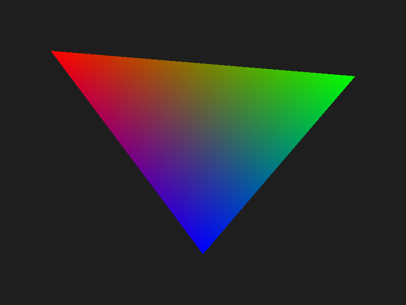

I was reading about how GPUs handle anti-aliasing and kept seeing MSAA described as deceptively simple once you understand what the hardware is actually doing. I wanted to see it in code, so I extended the software rasterizer from the previous post. The change was smaller than I expected. Full source on GitHub.

The Problem
The original rasterizer tests each pixel at its center. Either the center is inside the triangle or it is not. That binary decision creates a staircase along every diagonal edge. Pixels on the edge either get full color or none at all. This is aliasing.
The fix is to not decide coverage with a single point. Test multiple positions within the pixel, count how many are inside, and use that ratio to blend the triangle color with whatever was already in the framebuffer.
Sample Positions
The sub-pixel positions are called sample offsets. For 4x MSAA you test 4 positions within each pixel, for 16x you test 16. The positions are not random and not on a regular grid. They use a rotated grid pattern designed to break up the staircase pattern as evenly as possible.
I hardcoded all the offsets in msaa_samples.h, one set per supported sample count. Keeping them hardcoded makes the code straightforward to read: no runtime allocation, no lookup table, just a static array selected at compile time with a #define.
// Set to 1, 2, 4, 8, or 16 before including this header
#ifndef MSAA_SAMPLES
#define MSAA_SAMPLES 4
#endif
#if MSAA_SAMPLES == 4
static const Vec2 sampleOffsets[4] = {
{0.375f, 0.125f},
{0.875f, 0.375f},
{0.125f, 0.625f},
{0.625f, 0.875f}
};
#elif MSAA_SAMPLES == 16
static const Vec2 sampleOffsets[16] = {
{0.5625f, 0.5625f},
{0.4375f, 0.3125f},
// ...14 more
};
#endifTo switch sample counts, change one line in main.c:
#define MSAA_SAMPLES 16
#include "msaa_samples.h"Coverage Testing
In the original rasterizer, the inner loop tested one point and wrote one color. With MSAA, the inner loop tests all MSAA_SAMPLES sub-pixel positions and counts how many pass the edge test:
int covered = 0;
for (int s = 0; s < MSAA_SAMPLES; s++) {
Vec2 sp = { x + sampleOffsets[s].x, y + sampleOffsets[s].y };
float s0 = edgeFunction(v1.position, v2.position, sp);
float s1 = edgeFunction(v2.position, v0.position, sp);
float s2 = edgeFunction(v0.position, v1.position, sp);
if ((s0 >= 0 && s1 >= 0 && s2 >= 0) ||
(s0 <= 0 && s1 <= 0 && s2 <= 0)) {
covered++;
}
}
if (covered == 0) continue;A pixel fully inside the triangle will have all samples covered. A pixel on the edge might have 3 of 16 covered, or 9 of 16. That fraction is the coverage ratio.
Shade Once, Blend by Ratio
MSAA does not shade each sample separately. That would be full supersampling (SSAA) and cost N times more shader work. Instead it shades once at the pixel center and uses the coverage count to scale the contribution:
// Shade at pixel center using barycentric interpolation
Vec2 center = { x + 0.5f, y + 0.5f };
float w0 = edgeFunction(v1.position, v2.position, center) / area;
float w1 = edgeFunction(v2.position, v0.position, center) / area;
float w2 = edgeFunction(v0.position, v1.position, center) / area;
float r = w0*v0.color.r + w1*v1.color.r + w2*v2.color.r;
float g = w0*v0.color.g + w1*v1.color.g + w2*v2.color.g;
float b = w0*v0.color.b + w1*v1.color.b + w2*v2.color.b;
// Blend into framebuffer based on coverage ratio
float alpha = covered / (float)MSAA_SAMPLES;
int index = (y * fb->width + x) * 3;
fb->colorBuffer[index + 0] = (unsigned char)(alpha * r * 255 + (1 - alpha) * fb->colorBuffer[index + 0]);
fb->colorBuffer[index + 1] = (unsigned char)(alpha * g * 255 + (1 - alpha) * fb->colorBuffer[index + 1]);
fb->colorBuffer[index + 2] = (unsigned char)(alpha * b * 255 + (1 - alpha) * fb->colorBuffer[index + 2]);If all 16 samples are covered, alpha = 1.0 and the pixel gets the full triangle color. If 4 of 16 are covered, alpha = 0.25 and the triangle color blends 25% over the background. Edge pixels get partial coverage, which is exactly the smooth transition that removes the staircase.
What This Skips
This is MSAA in its simplest form. A real implementation would resolve the multi-sample buffer into the final image in a separate pass rather than blending directly into the framebuffer. It would also handle depth per-sample rather than per-pixel, which matters when triangles intersect. And for transparent geometry it would need to track sample masks rather than blending inline. But the core idea is exactly this: test coverage at multiple sub-pixel positions, shade once, blend by ratio.